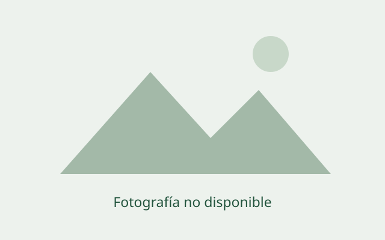

Cargando información de la ruta…
No encontramos esta ruta
Puede que el enlace esté incompleto o que la ruta ya no esté disponible.
Ver todas las rutasCargando información de la ruta…

Puede que el enlace esté incompleto o que la ruta ya no esté disponible.
Ver todas las rutas